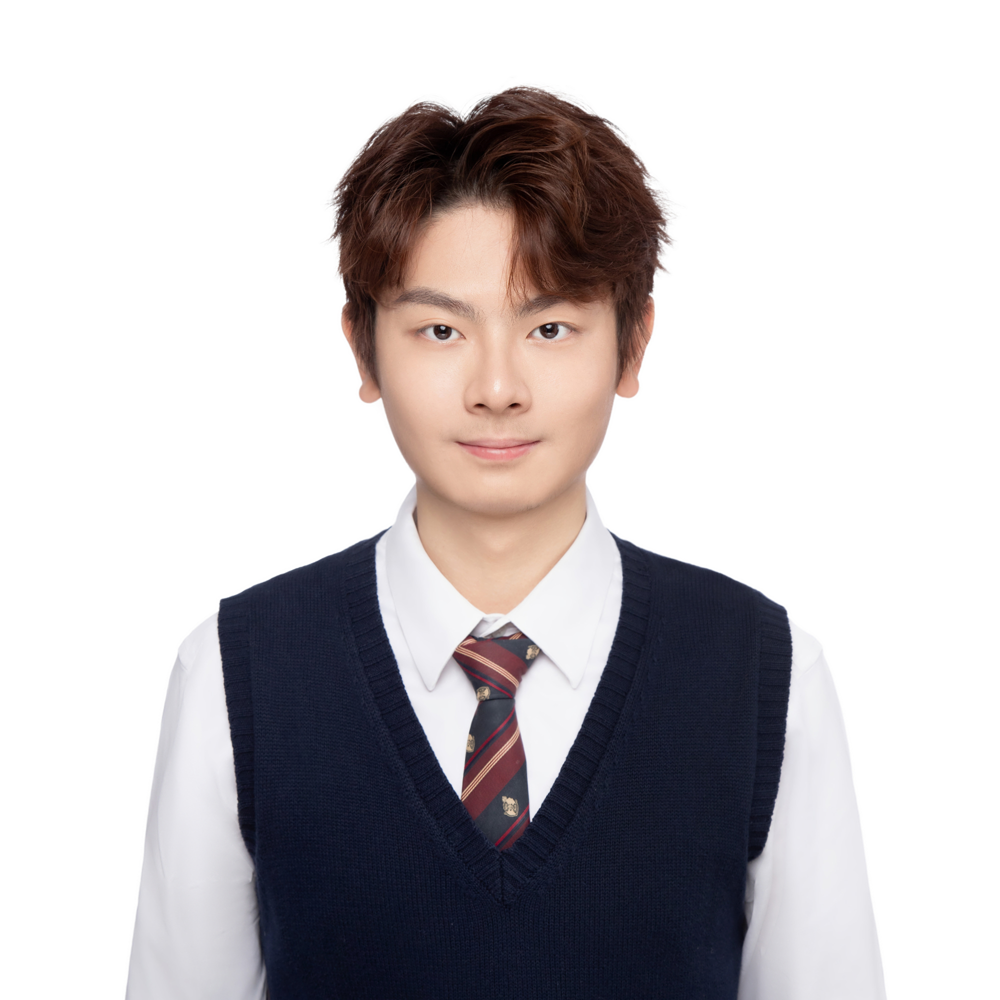
Undergraduate Researcher & UROP Fellow
B.S. Mathematics · Computer Science Minor
College of Science & Engineering
University of Minnesota, Twin Cities
I am an Undergraduate Research Assistant and UROP Fellow at the University of Minnesota, Twin Cities, working in the SuperCDMS Dark Matter Experiment under Prof. Yan Liu (School of Physics & Astronomy). I am majoring in Mathematics with a minor in Computer Science (GPA 4.0, Dean's List, Tau Sigma Honor Society).
My work spans hardware, software, and data analysis for dark matter detection — from hands-on cryogenic instrumentation to building data pipelines, signal-processing workflows, and real-time monitoring systems.
School of Physics & Astronomy, University of Minnesota
Undergraduate Research Assistant & UROP Fellow · Advisor: Prof. Yan Liu · Postdoctoral Mentor: Shubham Pandey
Generated 1×1 and N×M phonon pulse templates for all SuperCDMS SNOLAB R4 detectors (up to 10 Ge detectors, 12 phonon channels each) using freshly acquired calibration data under the Prompt_V07-02_C0.4.5 production tag. Implemented 4-exponential model fitting, PCA-based N×M component extraction, and ROOT file output for downstream optimal filter reprocessing by the analysis team.
Built a full data pipeline in Jupyter Notebook to process LED calibration data from 11 cryogenic germanium detector channels. Implemented baseline subtraction, SNR-based glitch detection, peak alignment, and exponential fitting over 5,200+ events (10+ GB raw data). Added pickle caching for fast re-runs and explored ML approaches for glitch event identification. Incorporated postdoc feedback (SNR ratio criterion, adaptive baseline selection).
Independently extended factory calibration curves for two RuOx sensors (R31279 & R31839) to the full 5 mK – 300 K operational range of the BlueFors dilution refrigerator. Implemented three fitting models (degree-5 log-polynomial, PCHIP + Mott VRH, cubic log-polynomial) and generated validated Lake Shore .340 files for direct controller loading. Preferred model: PCHIP + Mott VRH for physical motivation and exact data reproduction.
Independently migrated a 2.1 GB PostgreSQL database (8.25 M rows, 13 tables) from the BlueFors Windows control computer to a Linux server with a 12.7 TB external drive, resolving storage constraints via PostgreSQL data-directory relocation. Built an interactive Slack bot (BlueFors-Alert) integrated with the cs2 database that sends real-time alerts when refrigerator sensor values (temperature, pressure) exceed defined thresholds — and accepts commands directly in Slack to adjust thresholds, acknowledge alerts, and query sensor status without touching the server.
Participated in the physical installation of a ~$500K BlueFors dilution refrigerator under guidance of David, a field engineer from BlueFors. Set up the compressor water-cooling circulation system; assembled a heater on the 4K plate to diagnose elevated temperature and identified high P5 valve pressure as the root cause. Assisted with component assembly, vacuum pump-down, and initial 4K cooldown verification.
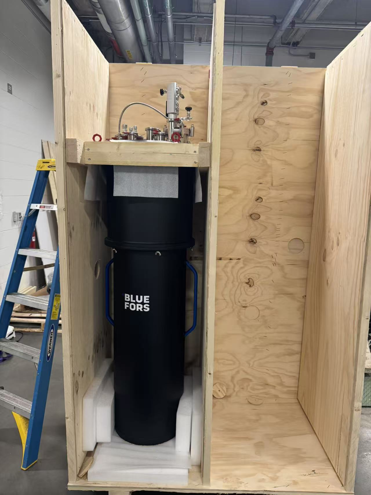
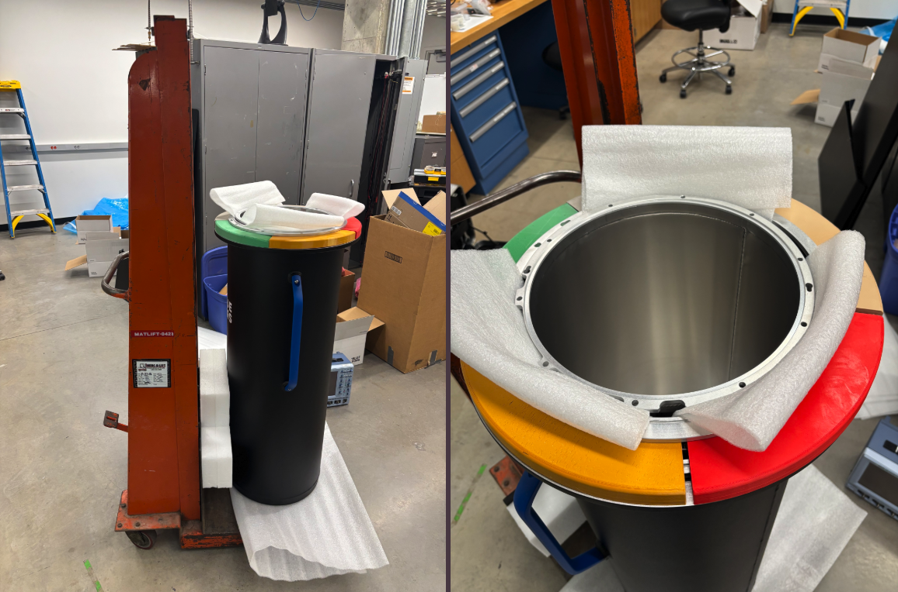
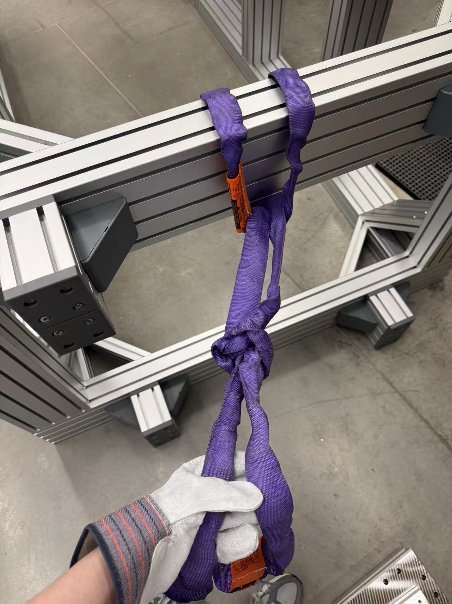
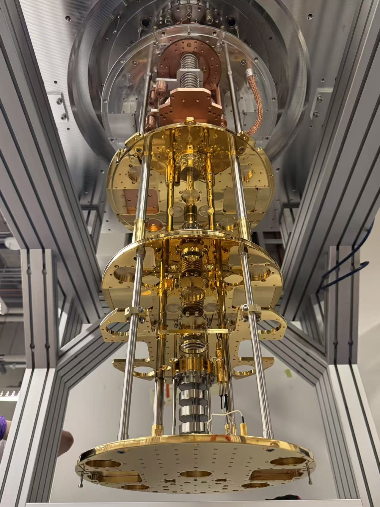
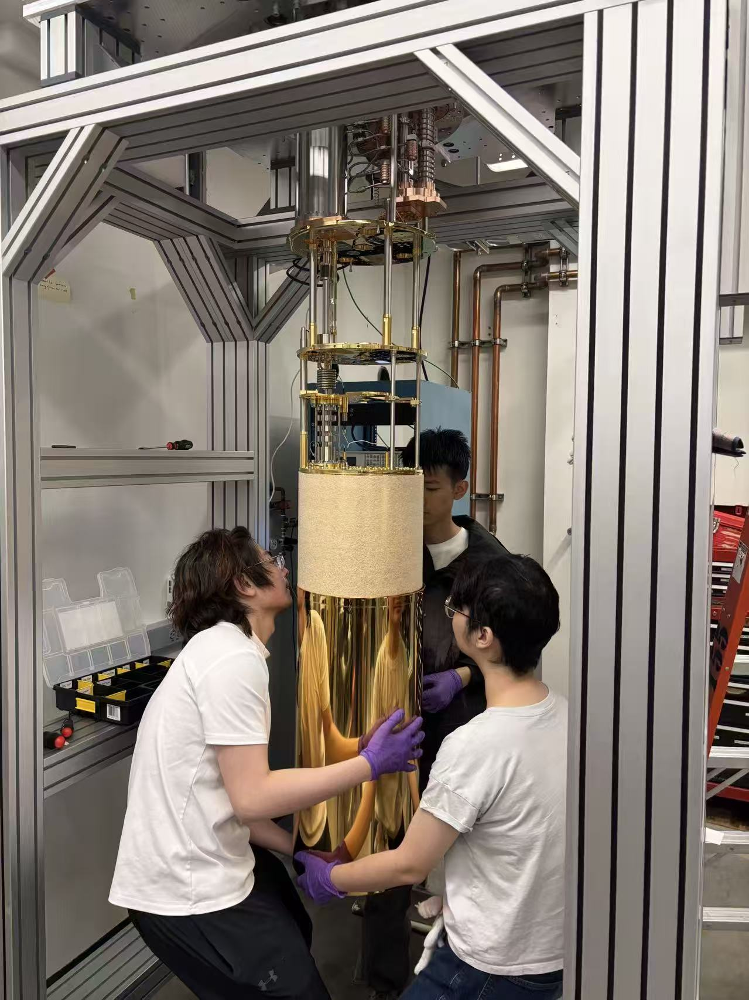
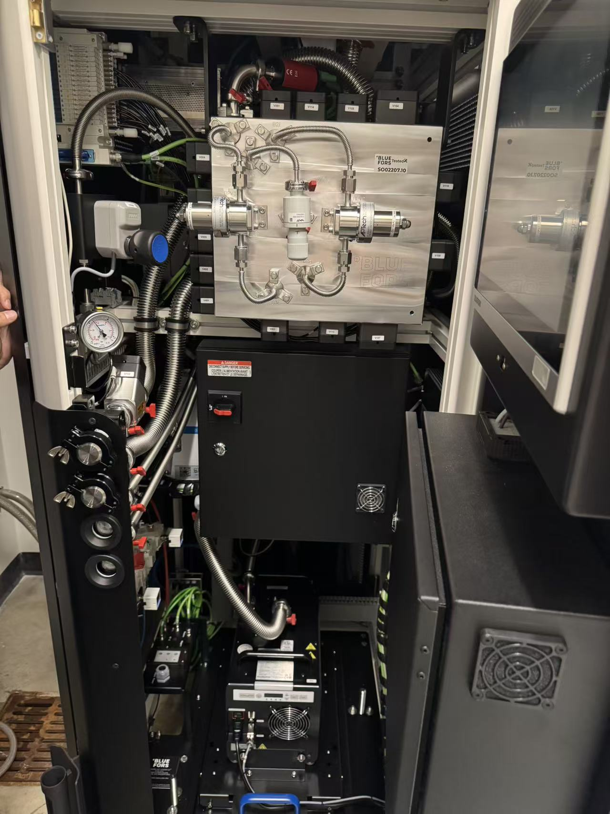
Self-studied Fourier transform, convolution, and optimal filter theory in the context of SuperCDMS data analysis. Independently derived connections between convolution as a linear mapping, the Fourier transform as a function-space inner product, and the time-frequency uncertainty principle. Explored Green's function approaches to signal decomposition — a direction confirmed to be active in signal-processing research.
Team Leader · Beijing, China
Led a cross-university student team to design and prototype a cost-efficient billiards rest (架杆) addressing equipment inefficiencies in existing designs. Conducted market analysis and product testing to evaluate commercialization potential. Invited to attend Tsinghua X-Lab & Kering Entrepreneurship Roadshow, engaging with high-profile AI teams and industry leaders. Won 1st Prize at the 15th National College E-Commerce "Innovation, Creativity & Entrepreneurship" Challenge (campus level).
Team Member · Beijing, China
Contributed as a team member to a beverage innovation project ("旋流解封，营养升华") that won multiple prizes at regional and national levels, including 1st Prize at the 4th Beijing University Student Innovation & Entrepreneurship Competition (Science & Technology Track) and 1st Prize (Beijing District) at the China International College Students' Innovation Competition (2025).
Undergraduate Researcher · Beijing, China
Assisted in research on low-carbon transition pathways for China's steel industry. Contributed to data collection, database construction, and quantitative analysis for national low-carbon policy initiatives.
Certificates
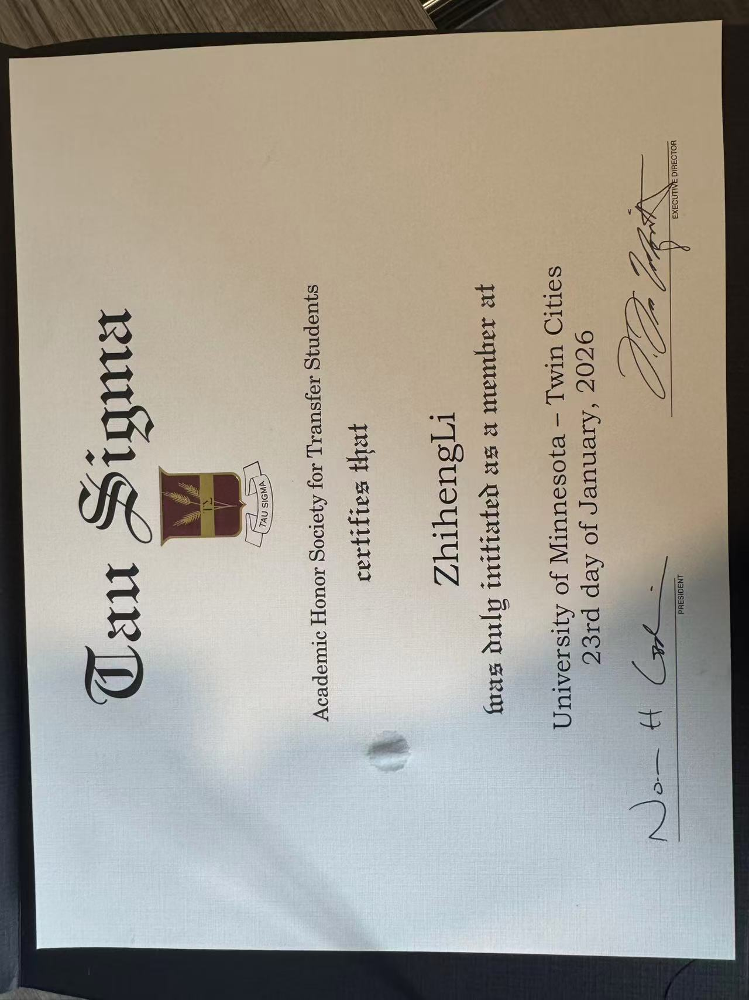
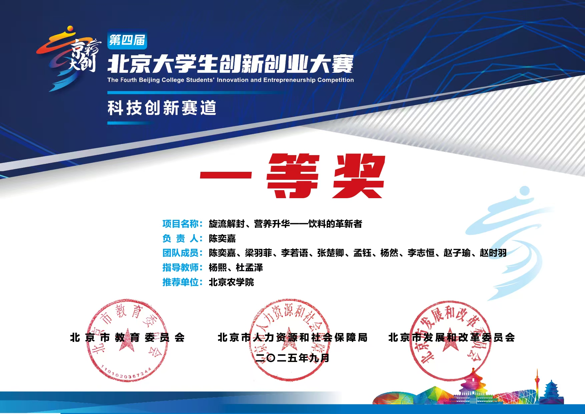
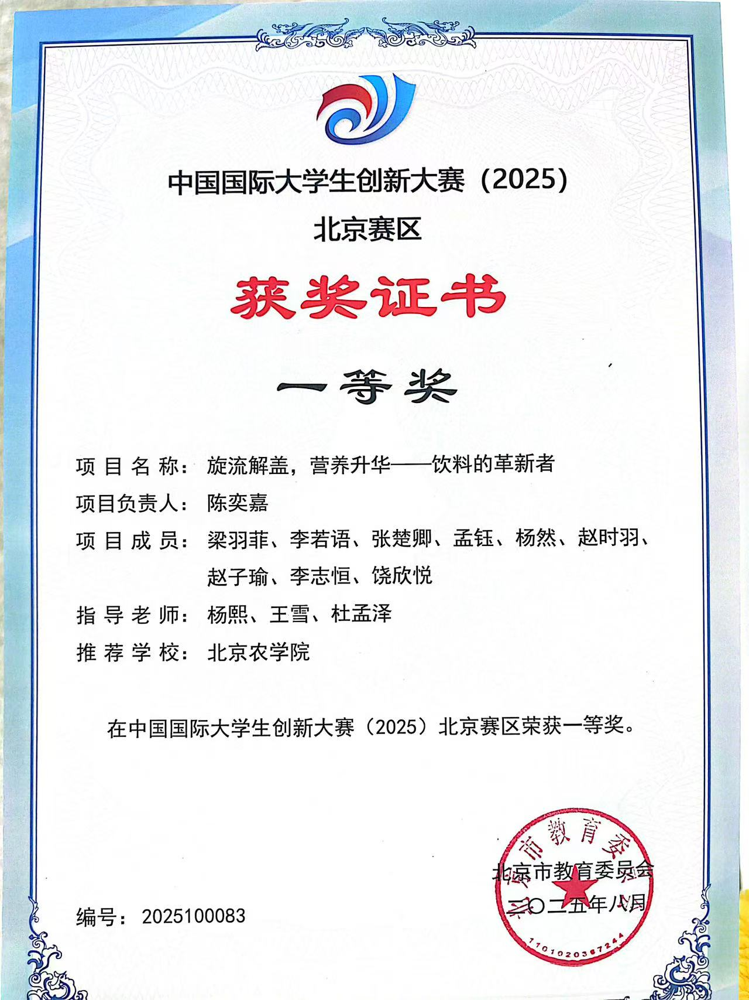
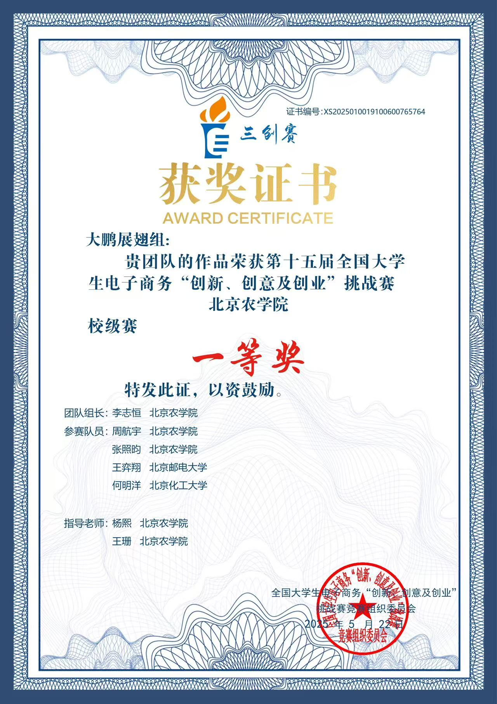
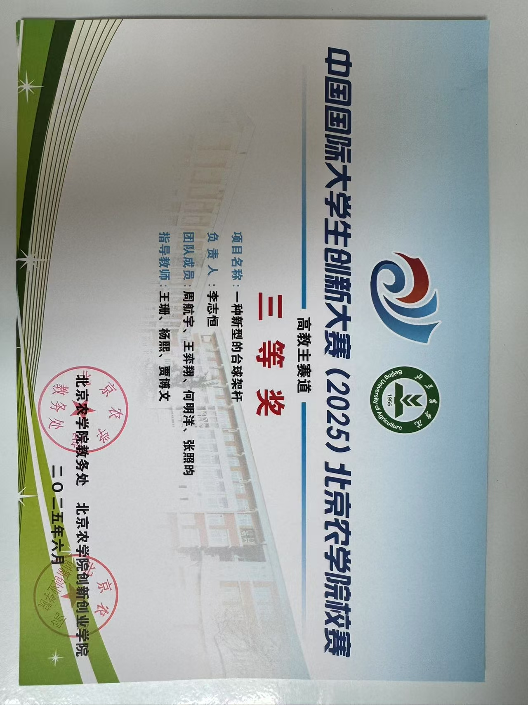
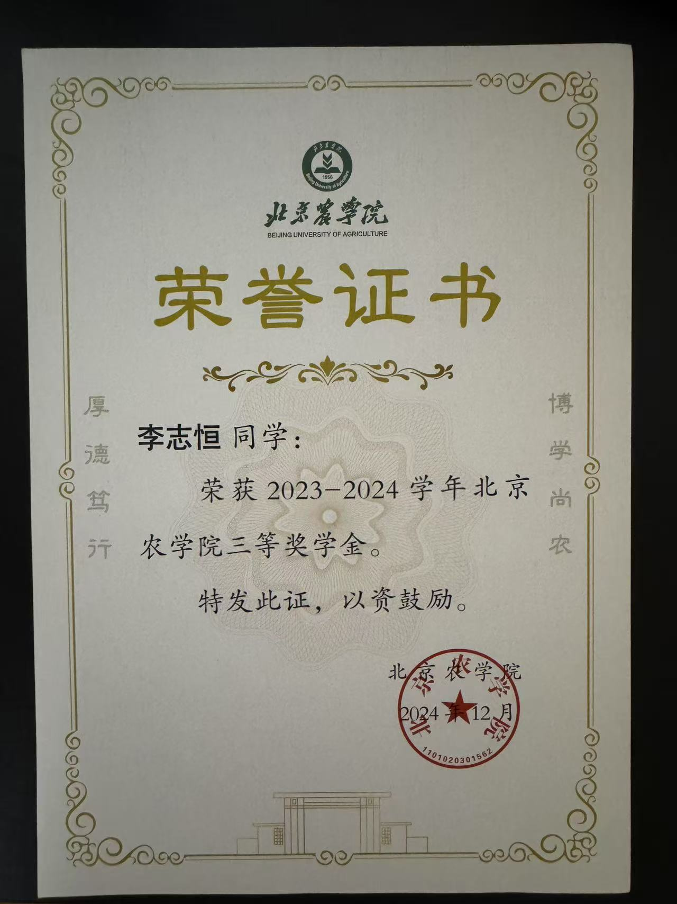